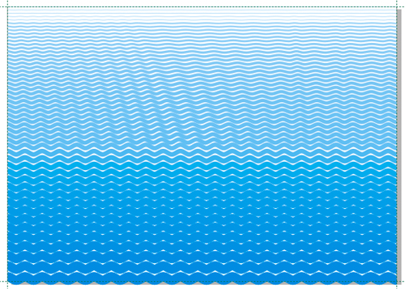
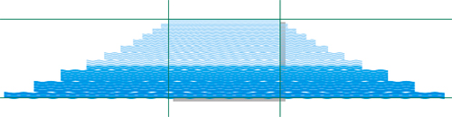
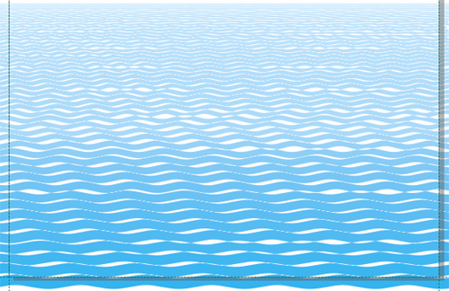
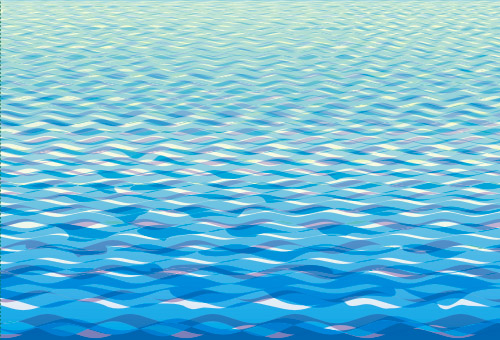
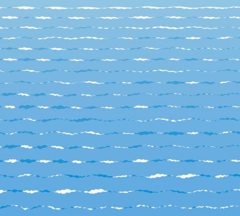
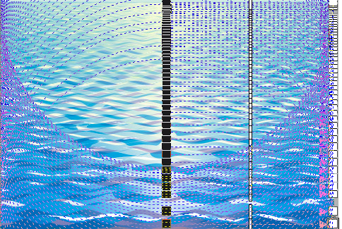
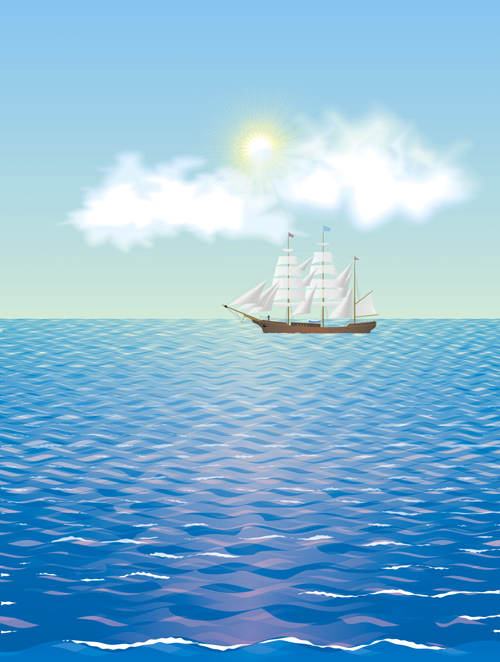

Рисуем МОРЕ
В данном уроке рассматривается пример рисования поверхности спокойного моря.
Сначала создадим просто ряды волнистых линий. Вдоль верхней и нижней кромок листа создайте прямые линии с десятикратной разницей по толщине: вверху тонкая, внизу толстая (для формата А4 – 1 и 10 мм). Между ними ещё одну примерно со средним значением толщины. Цвет верхней линии 20 % С, средней - 40 % С и нижней - 100 % С. Нижней и средней линиям надо придать волнистость. Воспользуйтесь эффектом Искажение типа Застёжка-молния, частота около 40 – 50, амплитуда 5 - 7. Создайте две группы перетекания: между нижней и средней линиями и между средней и верхней. Не стремитесь сразу распределить линии равномерно, как на рисунке ниже, т.к. всё равно потом их придётся раздвигать.

Разъедините и разгруппируйте обе группы перетекания.
Теперь создадим имитацию перспективы. Начиная от верха пропустите примерно 5 полос, выделите следующие пять и растяните от центра (с кл. Shift) на две—три длины волны. Затем выделите следующие пять полос и растяните на две—три длины волны относительно предыдущей пятёрки, и так далее (см. рисунок ниже).

Теперь придётся немного потрудиться. Сдвигая каждую полосу по вертикали, надо расставить их так, чтобы они не перекрывали друг друга, а только касались. Сдвигать каждую полосу надо и по горизонтали примерно на половину длины волны, чтобы не было стройной регулярной структуры (см. рисунок ниже).

Под линии поместите фон – прямоугольник с цветовым градиентом: вверху цвет 20;0;10;0 и внизу – 80; 30; 0; 0.
Создайте два дубля (копии) групп полос. Задайте им однородную прозрачность: группе на нижнем уровне – с режимом смешивания Синий; группе, находящейся выше – с режимом смешивания Разность; и группе верхнего уровня – с режимом смешивания Вычесть. Степень прозрачности для всех – 50 %.
Сместите немного дублированные группы так, чтобы линии частично перекрывались. Чтобы избежать строго регулярного рисунка, группу можно отразить по горизонтали, растянуть, как по горизонтали, так и по вертикали. Также для избежания однообразности рисунка волн, нескольким полосам на переднем плане придайте дополнительные искажения, смещая отдельные точки и их вектора.
См. рисунок ниже.

Для оживления картины надо добавить «барашки» — белые пенные гребни волн. Для получения целого набора заготовок таких гребешков можно сделать так: создать копию группы волнистых линий, преобразовать в кривые и снова задать искажение типа Застёжка-молния, сглаженное. Сами волнистые линии приобретут волнистый край (см. рисунок ниже).

Затем надо выполнить для объектов данной группы слияние контуров и полученную фигуру вычесть из белого прямоугольника-фона. К полученной фигуре примените команду Разъединить и получите таким образом множество гребешков разнообразных форм, каждый из которых можно подредактировать дополнительно. Например, для придания большей извилистости краю редактируйте отдельные точки инструментом Форма. При «насаживании» гребней на волны для придания гребням дополнительной кривизны используйте эффект Оболочка.
После того, как вы утвердились с рисунком волн, образуемым тремя группами волнистых линий и «барашками», не забудьте выполнить обрезку всего, что выступает за границы листа. Обрезать можно группу целиком. Также удобно выполнять обрезку, используя привязку к направляющим.
Если на рисунке будет солнце, можно добавить его отсвет в воде.
Выделите одну из групп линий, ту, что выше, и измените тип прозрачности на радиальную. См. рисунок ниже.

Добавляйте рисованному морю другие детали изображения и...
Счастливого плавания с программой CorelDRAW!

P.S. Указанные режимы смешивания для прозрачностей справедливы для версии Х4.
Для других версий эксперементируйте сами.
Специально для cdrpro.ru.
Копирование урока или части его и воспроизведение любым способом без письменного согласия автора запрещено.
молодец, Solowejka, здорово !
Неплохо бы и ломаное отражение от корабля на картинке разместить
shark, Спасибо!
Вариант с отражением конечно же тоже рассматривался, но посовещавшись с человеком, которому я доверяю, мы согласились, что поверхность моря при этом начинает более походить на озёрную гладь.
Хотя, дело вкуса.